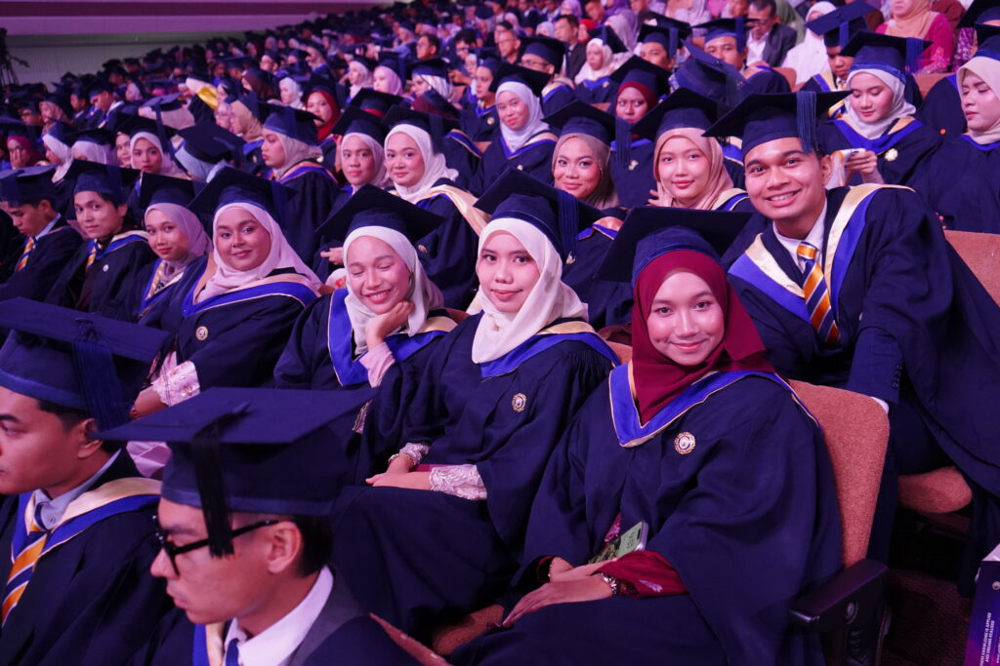
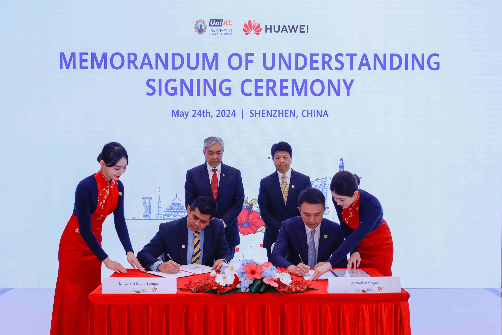
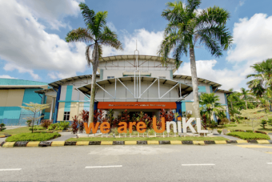
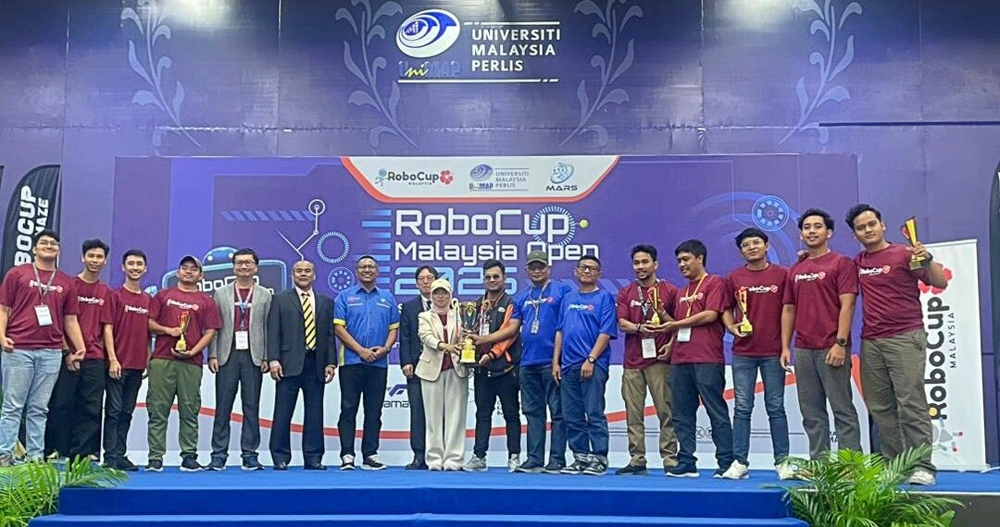

Kuala Lumpur (8 specialised campuses) Premier Technical University Est. 2002
University guide for Bangladeshi applicants
Study at Universiti Kuala Lumpur (UniKL)
Explore Universiti Kuala Lumpur (UniKL), also searched as University of Kuala Lumpur. Choose the programme and specialist institute together: the university name alone does not identify where your course is taught.
About Universiti Kuala Lumpur (UniKL)
Universiti Kuala Lumpur (UniKL) is Malaysia's leading technical university, established in 2002 and wholly owned by Majlis Amanah Rakyat (MARA), an agency under the Ministry of Rural and Regional Development. UniKL operates under a unique "One Institute, One Specialisation" framework, housing specialised institutes across Malaysia that combine high-level academic study with practical technical training.
With over 29,000 students across its specialized campuses, UniKL collaborates closely with major global industrial leaders—such as Airbus, Thales, BMW, and Microsoft—to ensure curricula remain at the forefront of industry needs. Graduates benefit from hands-on laboratory experiences, industry certifications, and top graduate employability rates nationwide.
Campus Life
UniKL Campus
UniKL Campus

Convocation

Huawei Partnership

UniKL Campus
Joyful Students
Aviation Tech
International Students

RoboCup Champions
Campus & Facilities
UniKL's campus network is designed around high-tech domain specialization. Each institute offers purpose-built industrial machinery, flight simulators, marine test basins, and digital innovation centers, providing students with realistic hands-on experience before entering the workforce.
Aviation Maintenance Hangar & Flight Simulator Training Center (UniKL MIAT)
Chemical & Bioengineering Laboratories (UniKL MICET)
Universiti Kuala Lumpur (UniKL) courses and intake planning
Engineering and engineering technology: compare the precise award and professional accreditation route.
Computing and multimedia: identify the specialist institute and location for the selected programme.
Business, health and other disciplines: use the campus code and exact course title to locate the correct admissions information.
Programme examples in the stored fee schedule
These examples retain the stored schedule's wording. They are not a complete course catalogue or confirmation of the next open intake. Use the official programme sources below to confirm current availability.
Selected programme examples; schedule information only
The stored UniKL chart includes an INTAKE column beside the institute. Confirm the next available international intake and application deadline with that institute rather than assuming all campuses follow one timetable.
Entry planning for Bangladeshi students
Use UniKL's international entry-requirement guidance as a starting point and request the detailed requirements for your selected programme. Confirm qualification equivalence, subjects and English evidence; do not assume domestic funding schemes apply to Bangladeshi applicants.
Prepare your qualification certificates, subject transcripts and any English-test results for assessment. Confirm the exact programme, campus, study mode, academic conditions and international application deadline together. This guide does not establish a universal HSC grade or IELTS waiver.
A scholarship or adjusted-fee entry in a schedule is not proof that every applicant qualifies. Request the named award, eligible programme and intake, application deadline and continuation requirements. Keep the approved award and final fee offer together. Read the Malaysia scholarship guide.
Questions about studying at Universiti Kuala Lumpur (UniKL)
Are all UniKL courses taught in Kuala Lumpur?
UniKL operates through specialist institutes in different locations. Use the programme's institute and campus information, rather than the university name, when planning where to live.
Are engineering and engineering technology the same qualification?
Treat them as distinct awards when comparing programmes. Check the curriculum, exact qualification title and relevant accreditation or professional-registration route for your intended career.
Verified . Each figure below names its ranking edition.
QS World 2027
#1401+
QS Asia 2026
#=396
Malaysia · QS World 2027
#31–32
Malaysia positions are calculated among the 32 institutions listed by QS under Malaysia in its World 2027 table. This is not a separate government ranking. An = sign marks a tie. Institutions in the same world-rank band share a national position range because their exact order is not published.
QS World and QS Asia use different methods. Overall university positions do not establish the ranking of a particular BBA, IT, MBA or other program.
What is the ranking of Universiti Kuala Lumpur (UniKL) in Malaysia?
UniKL has Malaysia position #31–32 among the 32 institutions listed under Malaysia in QS World 2027, calculated from the published table. The world-rank band does not establish a more precise national order. This is a position within the QS World table, not a separate government ranking or a QS Asia position.
Do QS Stars, SETARA or partner rankings give Universiti Kuala Lumpur (UniKL) an overall QS rank?
QS Stars and SETARA are ratings, not numerical positions in a QS league table. A subject ranking applies to that subject, and a partner university rank belongs to the named partner. Check the institution, ranking system and edition before comparing.